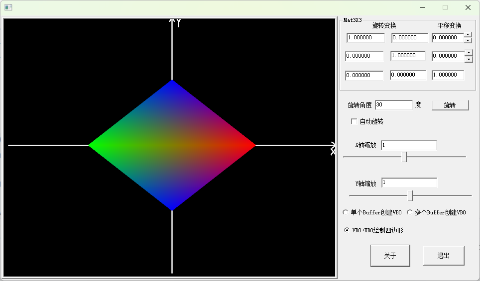

使用Shader绘制VAO、VBO、EBO类型的三角形
作者：刘文庆
在写这篇文章前意识到以前使用的Shader封装直接使用了std::out<<流式形式的输出，如果应用程序是终端类型的应用程序，当Shader编译链接发生错误时，可以在console下看到错误信息，在winmain()类型的窗口应用程序在看不到错误信息。开始准备使用多年使用的Easylogging++日志库，后来考虑到这篇文章只是初级的教学内容，不适合工程开发使用，于是定义了TraceMsg.h头文件，在Shader.hpp中直接使用TraceMsgA函数将错误信息输出到编译器的调试终端。
其实OpenGL中VAO、VBO、EBO的定义与Shader并没有直接的关系，这一点通过上一篇文章《采用固定管线模式下VAO、VBO、EBO绘制三角形》通过程序演示可以很明确的说明了这一点，很多作者多年来一致误导学生，在OpenGL中引入VAO编程必须使用Shader是错误的。OpenGL 3.0、3.1、3.2三个版本为了过渡起见，引入了两种工作模式：一种兼容性模式（COMPATIBILITY_PROFILE），在这种模式下可是使用Shader编程，也可是使用传统的glBegin()、glEnd()形式绘制物体；另一种模式核心模式CORE_PROFILE，在这种模式下不再允许使用传统的glBegin()、glEnd()形式绘制物体物体，只能使用Shader模式下通过VAO、VBO、EBO绘制物体。所以很多文章讲解时强调VAO模式只能使用Shader方式是不全面的。
现代显卡基本结构及GPU本质

上图为一块显卡的主要结构，从逻辑组成上显卡主要包含三部分组成：
① 显卡计算单元（GPU）：最开始时显卡中并没有包含能够完成通用计算的GPU单元，为了通过显卡完成三维图像加速（OpenGL、Direct3D）显卡中设计了部分能够完成矩阵计算的硬件电路，从而允许将三维图形渲染过程中的部分计算从CPU移植到显卡电路上完成，这样就实现了图像加速。随着硬件电路的发展，为了提供更加灵活的显卡加速计算，显卡设计厂商将显卡中硬件加速电路设计为可以完成单独计算功能的多个计算单元，这些计算单元可以通过编程方式进行排列组合从而完成大规模数据集并行计算，而且如果计算单元数量允许情况下，多个并行计算记过串联后，显卡就可以完成更为复杂的并行计算过程的硬件加速计算，所以从逻辑上认识GPU可以这么认为：GPU+显卡驱动(显卡ROM中的代码和驱动程序)共同作用下，GPU就变为可编程的特定大规模DSP（数字信号处理器）电路，编程程序可以认为就是Shader代码。
② 显卡显存（Memory）：显卡中设计显存最开始时双端口RAM，一方面能够与GPU单元进行交换数据，另一方面能够与输出电路交换信息，从而完成显示功能。现代显卡保留一部分双端口RAM情况下，进行了大面积RAM扩充，大量添加的DRAM显存，用于保存Shader代码、显示纹理缓冲区、各种顶点缓冲区以及其他需要的数据集。
③ 接口电路：完成显卡与CPU通信以及将显示数据转换为显示器可是识别的信号从而完成显示信号的输出。
初步认识OpenGL中Shader代码
在OpenGL程序中Shader称为GLSL代码，是需要传送到显存中通过显卡GPU运行的特定代码。依据三维观察流水线设计（参见《三维图形学 openGL/Diret3D中变换原理》），Shader代码提到了传统OpenGL渲染管线中某一部分的计算过程，下图为现代OpenGL渲染三维图形的基本流程图。

现在OPenGL程序需要用户编写的着色器有：顶点着色器(必选)、曲面细分着色器（可选）、几何着色器（可选）、片段着色器（必选）几种。
顶点着色器(必选)
在OpenGL的顶点处理阶段，主要由顶点着色器（Vertex Shader）*负责处理每个输入的顶点数据。最常见的操作是将顶点从模型空间经过一系列变换（如视图变换、投影变换）转换到*裁剪空间，同时根据其他顶点属性（如法线、颜色、纹理坐标）计算新的属性值，传递给后续的片段着色器。顶点着⾊器器是逐个顶点进行运算，也就是说每个顶点数据都会执⾏一次顶点着色器，当然这个过程是并行的，并且顶点着⾊器运算过程中无法访问其他顶点的数据。
x1#version 460 core2// 顶点着色器输入4layout(location = 0) in vec3 inPosition; // 顶点位置5layout(location = 1) in vec3 inNormal; // 顶点法线6layout(location = 2) in vec2 inTexCoord; // 纹理坐标7// 传递给片段着色器的输出9out vec3 fragNormal; // 法线，传递给片段着色器10out vec2 fragTexCoord; // 纹理坐标，传递给片段着色器11// 统一变量，用于矩阵变换13uniform mat4 model; // 模型矩阵14uniform mat4 view; // 视图矩阵15uniform mat4 projection; // 投影矩阵16void main() {18// 将顶点位置从模型空间转换到裁剪空间19vec4 worldPosition = model * vec4(inPosition, 1.0); // 模型空间到世界空间20gl_Position = projection * view * worldPosition; // 世界空间到裁剪空间21// 将法线从模型空间变换到世界空间23fragNormal = mat3(transpose(inverse(model))) * inNormal;24// 传递纹理坐标到片段着色器26fragTexCoord = inTexCoord;27｝
Vertex Shader中包含一下几种参见修饰的全局变量：
① layout(location = 0) in 修饰的变量：这种修饰的变量为外部程序传输过来的顶点Buffer数据变量，通常包含顶点位置vec3 inPosition、顶点颜色vec3 inColor、顶点法线向量vec3 inNormal、顶点纹理坐标vec2 inTexCoord等信息；其中location = 0修饰后面跟着的数字0、1、2、3、4对应应用程序设置函数：
glVertexAttribPointer(0, 3, GL_FLOAT, GL_FALSE, 6 * sizeof(GLfloat), (GLvoid*)0);
glEnableVertexAttribArray(0);
中第一个参数的数字，注意：顶点位置数据必须设置为0；
可能有同学注意到了，使用Shader编程模式开发VAO程序时，我们使用glVertexAttribPointer和glEnableVertexAttribArray函数设置顶点信息的序号；而直接使用固定管线开发VAO程序时使用glEnableClientState、glVertexPointer、glColorPointer、glNormalPointer、glTexCoordPointer等函数分别设置各自的属性信息。
② out vec3 fragNormal 修饰的变量：layout(location = 0) in修饰符修饰的变量只能在Vertex Shader中使用，不能被其他类型的Shader使用，所以要将信息传送到后续Shader中应用，必须定义out类型的修饰符，用于将Vertex Shader中的相关信息传送到后续的Shader中使用。
③ uniform mat4 model 修饰的变量：Shader程序除了接受程序传送过来的顶点信息外(注意：顶点信息称为Buffer，在Shader中是不能被修改的)，还需要应用程序根据需要动态传送一些变量，我们用uniform约束，外部应用程序通过如下代码将变量值传送到Shader中：
int varID = glGetUniformLocation(ShaderID, varName)；
glUniform1f(varID , value);
uniform mat4 model 修饰的变量的变量可以出现在多个Shader中，效果完全相同。
④ 普通类型的全局变量如：float g_var=10；：这种类型的变量与传统的c程序相同。
片元着色器（Fragment Shader）
从渲染流水线工作过程看，Fragment Shader位于光栅化后面，也就是要绘制的单个图元经过计算已经需要确定其映射到屏幕上的每个像素的颜色值了， Fragment Shader就是用于计算单个图元映射到屏幕像素的颜色值，即计算最终的像素颜色值，包括纹理采样、颜色混合和透明度处理，还可以应用后处理效果如模糊、色调映射等。
x1uniform sampler2D textureRef;//纹理数据3uniform vec4 i_ambient; //环境光设置4varying float v_diffuse; //漫发射光设置5in vec2 fragTexCoord; //纹理坐标6in vec3 fragNormal; //法向量7out vec4 fragOutColor;8void main (void)9{10vec4 color = texture2D(textureRef, fragTexCoord);11fragOutColor = color*(vec4(v_diffuse) + i_ambient);13}
① Fragment Shader中的输入变量：输入变量包括Vertex Shader中的所有输出变量，注意修饰符改为in 其他不变，外部程序传送过来的uniform变量（一般包括纹理Buffer和光照参数）；
② Fragment Shader中的输出变量：out vec4 fragOutColor;只有一个out修饰的vec4类型的变量。
Fragment Shader程序设计技巧比较复杂，随着学习深入可以开发出很多特殊效果的Fragment Shader供我们使用，作为初学者我们首先从总体上认识着色器的基本作用和使用方法就可以了。
细分着色器和几何着色器并不是必须的，本篇文章我们不再讲述，作者准备单独用一片文章单独讲解《几何着色器及其实现特殊效果中的应用》文章。
在程序中应用Shader编程
Vertex Shader和Fragment Shader均是运行在显卡中的程序代码，编写完成这些代码需要将其编译、传送到显卡GPU中，并且设置OpenGL流水线应用这些代码，即应用程序需要对Shader代码进行管理。我们为了更好的设计OpenGL应用程序，专门设计了一个Shader类，完成了所有这部分工作：
xxxxxxxxxx14821///////////////////////////////////////////////////////////////////////////////2// Shader.hpp 用于创建处理C++程序开发OpenGL程序中使用的GLSL（Shader）的类，3// 本文件的独立头文件，4// 版权所有 刘文庆 2023.11 廊坊5///////////////////////////////////////////////////////////////////////////////6#ifndef SHADER_HPP8#define SHADER_HPP9#include <windows.h>11#include <fstream>12#include <sstream>13#include <iostream>14#include "TraceMsg.h"15#ifdef _MSC_VER17#pragma optimize( "g", off )18#endif19#include "glad.h"21#include <string>22#include "glm/glm.hpp"23#include "glm/gtc/type_ptr.hpp"24#include "ShaderType.h"25class Shader27{28public:29// 着色器程序ID30unsigned int ID=0;31Shader() { ID = 0; };33~Shader()35{36if (ID != 0)37{38glDeleteProgram(ID);39}40};41unsigned int getShaderID() { return ID; };43GLenum glCheckError_(const char* file, int line);44void InitializeShaderWithString(const char* computeCode);46void InitializeShaderWithString(const char* vShaderCode, const char* fShaderCode);47void InitializeShaderWithString(const char* vShaderCode, const char* fShaderCode,const char* geometryShaderCode);48void InitializeShaderFromFile(const char* computePath);49void InitializeShaderFromFile(const char* vertexPath, const char* fragmentPath);50void InitializeShaderFromFile(const char* vertexPath, const char* fragmentPath,const char* geometryPath);51//使用着色器类52void Use() {53glUseProgram(ID);54}55void UnUse()56{57glUseProgram(0);58}59// 比较实用的统一函数60// ------------------------------------------------------------------------61void setBool(const std::string& name, bool value) const62{63glUniform1i(glGetUniformLocation(ID, name.c_str()), (int)value);64}65// ------------------------------------------------------------------------66void setInt(const std::string& name, int value) const67{68glUniform1i(glGetUniformLocation(ID, name.c_str()), value);69}70// ------------------------------------------------------------------------71void setFloat(const std::string& name, float value) const72{73glUniform1f(glGetUniformLocation(ID, name.c_str()), value);74}75void SetVec2(const std::string& name, const glm::vec2& value) const77{78SetVec2(name, value.x, value.y);79}80void SetVec2(const std::string& name, float x, float y) const81{82glUniform2f(GetUniform(name), x, y);83}84void SetVec3(const std::string& name, const glm::vec3& value) const85{86SetVec3(name, value.x, value.y, value.z);87}88void SetVec3(const std::string& name, float x, float y, float z) const89{90glUniform3f(GetUniform(name), x, y, z);91}92void SetVec4(const std::string& name, const glm::vec4& value) const93{94SetVec4(name, value.x, value.y, value.z, value.w);95}96void SetVec4(const std::string& name, float x, float y, float z, float w) const97{98glUniform4f(GetUniform(name), x, y, z, w);99}100void SetMat2(const std::string& name, const glm::mat2& value) const101{102glUniformMatrix2fv(GetUniform(name), 1, GL_FALSE, &value[0][0]);103}104void SetMat3(const std::string& name, const glm::mat3& value) const105{106glUniformMatrix3fv(GetUniform(name), 1, GL_FALSE, &value[0][0]);107}108void SetMat4(const std::string& name, const glm::mat4& value) const109{110glUniformMatrix4fv(GetUniform(name), 1, GL_FALSE, &value[0][0]);111}112private:114int GetUniform(const std::string& name) const115{116int position = glGetUniformLocation(ID, name.c_str());117if (position == -1)118{119TraceMsgA("uniform ", name, " set failed!");120//std::cout << "uniform " << name << " set failed!" << std::endl;121}122return position;123}124int GetShaderFromFile(const GLchar* vertex_shader_path, const GLchar* fragment_shader_path, std::string* vertex_shader_code, std::string* fragment_shader_code);126int LinkShader(const char* vertex_shader_code, const char* fragment_shader_code);127// 用于检查着色器编译 / 链接错误的实用程序函数。128// ------------------------------------------------------------------------129void checkCompileErrors(unsigned int shader, std::string type);130void CheckCompileErrors(GLuint shader, std::string type);131};132inline GLenum Shader::glCheckError_(const char* file, int line)134{135GLenum errorCode;136while ((errorCode = glGetError()) != GL_NO_ERROR)137{138std::string error;139switch (errorCode)140{141case GL_INVALID_ENUM: error = "INVALID_ENUM"; break;142case GL_INVALID_VALUE: error = "INVALID_VALUE"; break;143case GL_INVALID_OPERATION: error = "INVALID_OPERATION"; break;144case GL_STACK_OVERFLOW: error = "STACK_OVERFLOW"; break;145case GL_STACK_UNDERFLOW: error = "STACK_UNDERFLOW"; break;146case GL_OUT_OF_MEMORY: error = "OUT_OF_MEMORY"; break;147case GL_INVALID_FRAMEBUFFER_OPERATION: error = "INVALID_FRAMEBUFFER_OPERATION"; break;148}149//std::cout << error << " | " << file << " (" << line << ")" << std::endl;150TraceMsgA("Error is ", error, file, " set failed!");151}152return errorCode;153}154#define glCheckError() glCheckError_(__FILE__, __LINE__)156/*只有一个参数的函数，用于单独处理计算着色器*/157inline void Shader::InitializeShaderWithString(const char* computeCode)158{159GLuint computeShader = glCreateShader(GL_COMPUTE_SHADER);160glShaderSource(computeShader, 1, &computeCode, NULL);161glCompileShader(computeShader);162GLint success;164glGetShaderiv(computeShader, GL_COMPILE_STATUS, &success);165if (!success) {166GLchar infoLog[512];167glGetShaderInfoLog(computeShader, 512, NULL, infoLog);168std::cout << "Compute shader compilation failed:" << infoLog<< std::endl;169return;170}171ID = glCreateProgram();173glAttachShader(ID, computeShader);174glLinkProgram(ID);175glGetProgramiv(ID, GL_LINK_STATUS, &success);177if (!success) {178GLchar infoLog[512];179glGetProgramInfoLog(ID, 512, NULL, infoLog);180TraceMsgA("Compute shader linking failed: ", infoLog);181//std::cout << "Compute shader linking failed:" << infoLog << std::endl;182return;183}184glDeleteShader(computeShader);186return;187}188inline void Shader::InitializeShaderWithString(const char* vShaderCode, const char* fShaderCode)190{191// 2. 编译着色器192unsigned int vertex, fragment;193// 点着色器194vertex = glCreateShader(GL_VERTEX_SHADER);195glShaderSource(vertex, 1, &vShaderCode, NULL);196glCompileShader(vertex);197checkCompileErrors(vertex, "VERTEX");198// 片段着色器199fragment = glCreateShader(GL_FRAGMENT_SHADER);200glShaderSource(fragment, 1, &fShaderCode, NULL);201glCompileShader(fragment);202checkCompileErrors(fragment, "FRAGMENT");203// 着色器程序204ID = glCreateProgram();205glAttachShader(ID, vertex);206glAttachShader(ID, fragment);207glLinkProgram(ID);208checkCompileErrors(ID, "PROGRAM");209// 删除着色器，因为它们已经链接到我们的程序中了，已经不再需要了210glDeleteShader(vertex);211glDeleteShader(fragment);212}214inline void Shader::InitializeShaderWithString(const char* vShaderCode, const char* fShaderCode, const char* geometryShaderCode)216{217//const char* vShaderCode = vertexCode.c_str();218//const char* fShaderCode = fragmentCode.c_str();219// 2. compile shaders220unsigned int vertex, fragment;221// vertex shader222vertex = glCreateShader(GL_VERTEX_SHADER);223glShaderSource(vertex, 1, &vShaderCode, NULL);224glCompileShader(vertex);225checkCompileErrors(vertex, "VERTEX");226// fragment Shader227fragment = glCreateShader(GL_FRAGMENT_SHADER);228glShaderSource(fragment, 1, &fShaderCode, NULL);229glCompileShader(fragment);230checkCompileErrors(fragment, "FRAGMENT");231// if geometry shader is given, compile geometry shader232unsigned int geometry;233if (geometryShaderCode != nullptr)234{235const char* gShaderCode = geometryShaderCode;//geometryCode.c_str();236geometry = glCreateShader(GL_GEOMETRY_SHADER);237glShaderSource(geometry, 1, &gShaderCode, NULL);238glCompileShader(geometry);239checkCompileErrors(geometry, "GEOMETRY");240}241// shader Program242ID = glCreateProgram();243glAttachShader(ID, vertex);244glAttachShader(ID, fragment);245if (geometryShaderCode != nullptr)246glAttachShader(ID, geometry);247glLinkProgram(ID);248checkCompileErrors(ID, "PROGRAM");249// delete the shaders as they're linked into our program now and no longer necessary250glDeleteShader(vertex);251glDeleteShader(fragment);252if (geometryShaderCode != nullptr)253glDeleteShader(geometry);254}256inline void Shader::InitializeShaderFromFile(const char* computePath)258{259std::string computeCode;260std::ifstream computeShaderFile;261computeShaderFile.exceptions(std::ifstream::failbit | std::ifstream::badbit);262try263{264// 打开文件265computeShaderFile.open(computePath);266std::stringstream computeShaderStream;268// 从文件流中读入到buffer中269computeShaderStream << computeShaderFile.rdbuf();270// 关闭文件流272computeShaderFile.close();273// 把流转到string里面274computeCode = computeShaderStream.str();275//自己加的，用于测试，打印到控制台276//std::cout << computeCode << std::endl;277}279catch (std::ifstream::failure e)280{281//std::cout << "错误：Shader读取文件失败" << std::endl;282TraceMsgA("错误：Shader读取文件失败");283}284InitializeShaderWithString(computeCode.c_str());285}286inline void Shader::InitializeShaderFromFile(const char* vertexPath, const char* fragmentPath)288{289// 1. 从文件路径打开文件290std::string vertexCode;291std::string fragmentCode;292std::ifstream vShaderFile;293std::ifstream fShaderFile;294// 确保ifstream流能够抛出异常295vShaderFile.exceptions(std::ifstream::failbit | std::ifstream::badbit);296fShaderFile.exceptions(std::ifstream::failbit | std::ifstream::badbit);297try298{299// 打开文件300vShaderFile.open(vertexPath);301fShaderFile.open(fragmentPath);302std::stringstream vShaderStream, fShaderStream;303// 从文件流中读入到buffer中304vShaderStream << vShaderFile.rdbuf();305fShaderStream << fShaderFile.rdbuf();306// 关闭文件流307vShaderFile.close();308fShaderFile.close();309// 把流转到string里面310vertexCode = vShaderStream.str();311fragmentCode = fShaderStream.str();312//自己加的，用于测试，打印到控制台313//std::cout << vertexCode << std::endl;314//std::cout << fragmentCode << std::endl;315}316catch (std::ifstream::failure e)317{318//std::cout << "错误：Shader读取文件失败" << std::endl;319TraceMsgA("错误：Shader读取文件失败");320}321InitializeShaderWithString(vertexCode.c_str(), fragmentCode.c_str() );323}324inline void Shader::InitializeShaderFromFile(const char* vertexPath, const char* fragmentPath, const char* geometryPath)325{326std::string vertexCode;327std::string fragmentCode;328std::string geometryCode;329std::ifstream vShaderFile;330std::ifstream fShaderFile;331std::ifstream geometryShaderFile;332// 确保ifstream流能够抛出异常334vShaderFile.exceptions(std::ifstream::failbit | std::ifstream::badbit);335fShaderFile.exceptions(std::ifstream::failbit | std::ifstream::badbit);336geometryShaderFile.exceptions(std::ifstream::failbit | std::ifstream::badbit);337try338{339// 打开文件340vShaderFile.open(vertexPath);341fShaderFile.open(fragmentPath);342geometryShaderFile.open(geometryPath);343std::stringstream vShaderStream, fShaderStream, geometryShaderStream;345// 从文件流中读入到buffer中346vShaderStream << vShaderFile.rdbuf();347fShaderStream << fShaderFile.rdbuf();348geometryShaderStream << geometryShaderFile.rdbuf();349// 关闭文件流350vShaderFile.close();351fShaderFile.close();352geometryShaderFile.close();353// 把流转到string里面354vertexCode = vShaderStream.str();355fragmentCode = fShaderStream.str();356geometryCode = geometryShaderStream.str();357//自己加的，用于测试，打印到控制台360//std::cout << vertexCode << std::endl;361//std::cout << fragmentCode << std::endl;362//std::cout << geometryCode << std::endl;363}364catch (std::ifstream::failure e)365{366//std::cout << "错误：Shader读取文件失败" << std::endl;367TraceMsgA("错误：Shader读取文件失败");368}369InitializeShaderWithString(vertexCode.c_str(), fragmentCode.c_str(), geometryCode.c_str());371}372// ------------------------------------------------------------------------373inline int Shader::GetShaderFromFile(const GLchar* vertex_shader_path, const GLchar* fragment_shader_path, std::string* vertex_shader_code, std::string* fragment_shader_code)374{375std::ifstream vertex_shader_file;376std::ifstream fragment_shader_file;377vertex_shader_file.exceptions(std::ifstream::badbit | std::ifstream::failbit);378fragment_shader_file.exceptions(std::ifstream::badbit | std::ifstream::failbit);379try380{381vertex_shader_file.open(vertex_shader_path);382fragment_shader_file.open(fragment_shader_path);383std::stringstream vertex_shader_stream, fragment_shader_stream;384vertex_shader_stream << vertex_shader_file.rdbuf();385fragment_shader_stream << fragment_shader_file.rdbuf();386vertex_shader_file.close();387fragment_shader_file.close();388*vertex_shader_code = vertex_shader_stream.str();389*fragment_shader_code = fragment_shader_stream.str();390}391catch (std::ifstream::failure e)392{393//std::cout << "Load Shader File Error!" << std::endl;394TraceMsgA("Load Shader File Error!");395return -1;396}397return 0;398}399inline int Shader::LinkShader(const char* vertex_shader_code, const char* fragment_shader_code)401{402int vertex_shader = glCreateShader(GL_VERTEX_SHADER);403glShaderSource(vertex_shader, 1, &vertex_shader_code, NULL);404glCompileShader(vertex_shader);405CheckCompileErrors(vertex_shader, "VERTEX");406int fragment_shader = glCreateShader(GL_FRAGMENT_SHADER);408glShaderSource(fragment_shader, 1, &fragment_shader_code, NULL);409glCompileShader(fragment_shader);410CheckCompileErrors(fragment_shader, "FRAGMENT");411this->ID = glCreateProgram();413glAttachShader(ID, vertex_shader);414glAttachShader(ID, fragment_shader);415glLinkProgram(ID);416CheckCompileErrors(ID, "PROGRAM");417glDeleteShader(vertex_shader);419glDeleteShader(fragment_shader);420return 0;421}422// 用于检查着色器编译 / 链接错误的实用程序函数。424// ------------------------------------------------------------------------425inline void Shader::checkCompileErrors(unsigned int shader, std::string type)426{427int success;428char infoLog[1024]; //存储信息日志429if (type != "PROGRAM")430{431glGetShaderiv(shader, GL_COMPILE_STATUS, &success);432if (!success)433{434glGetShaderInfoLog(shader, 1024, NULL, infoLog);435//std::cout << "错误：Shader编译错误: " << type << "\n" << infoLog << "\n -- --------------------------------------------------- -- " << std::endl;436TraceMsgA("错误：Shader编译错误: ", type, "\n", infoLog,"\n");437}438}439else440{441glGetProgramiv(shader, GL_LINK_STATUS, &success);442if (!success)443{444glGetProgramInfoLog(shader, 1024, NULL, infoLog);445//std::cout << "错误：Shader链接错误: " << type << "\n" << infoLog << "\n -- --------------------------------------------------- -- " << std::endl;446TraceMsgA("错误：Shader链接错误:: ", type, "\n", infoLog, "\n");447}448}449}450inline void Shader::CheckCompileErrors(GLuint shader, std::string type)452{453GLint success;454GLchar infoLog[512];455if (type == "PROGRAM")456{457glGetProgramiv(shader, GL_LINK_STATUS, &success);458if (!success)459{460glGetProgramInfoLog(shader, 512, NULL, infoLog);461//std::cout << "ERROR::PROGRAM_LINKING_ERROR!\n" << infoLog << std::endl;462TraceMsgA("ERROR::PROGRAM_LINKING_ERROR!", infoLog, "\n");463}464}465else466{467glGetShaderiv(shader, GL_COMPILE_STATUS, &success);468if (!success)469{470glGetShaderInfoLog(shader, 512, NULL, infoLog);471//std::cout << "ERROR::SHADER::" << type << "::COMPILATION_FAILED\n" << infoLog << std::endl;472TraceMsgA("ERROR::PROGRAM_COMPILE_ERROR!", infoLog, "\n");473}474}475}476#endif479
xxxxxxxxxx71Shader m_Shader;//定义Shader变量2//初始化Shader----编译Shader、链接、传送Shader工作3m_Shader.InitializeShaderWithString(m_vertexShader.c_str(), m_fragmentShader.c_str());4//应用Shader5m_Shader.Use();6绘制代码7m_Shader.UnUse();
使用Shader编程过程中对VAO、VBO、EBO缓冲区数据进行组织管理
认识glVertexAttribPointer函数
前面我们已经提到在Shader模式下编写程序是通过glVertexAttribPointer和glEnableVertexAttribArray两个函数设置VBO缓冲区中数据的格式的，所以首先我们需要全面认识glVertexAttribPointer中各个参数的作用：
glVertexAttribPointer(0, //指定我们要配置的顶点属性,顶点着色器中使用layout(location = 0)定义了position顶点属性的位置值
3, //顶点属性的大小。顶点属性是一个vec3，它由3个值组成，所以大小是3。颜色属性可能是4、纹理坐标属性为2
GL_FLOAT, //指定数据的类型;一般情况下我们传送到显存中BUFFER中的数据为float，Color数据变换为0~1之间
GL_FALSE, //是否希望数据被标准化(Normalize)。如果我们设置为GL_TRUE，所有数据都会被映射到0（对于有符号型signed数据是-1）到1之间;我们把它设置为GL_FALSE。
6 * sizeof(GLfloat), //步长(Stride)的字节数，它告诉我们在连续的顶点属性组之间的间隔。由于下个顶点位置数据在6个float之后，我们把步长设置为6 * sizeof(float)。如果我们知道这个数组是紧密排列的（在两个顶点属性之间没有空隙）我们也可以设置为0来让OpenGL决定具体步长是多少（只有当数值是紧密排列时才可用）。一旦我们有更多的顶点属性，我们就必须更小心地定义每个顶点属性之间的间隔，我们在后面会看到更多的例子。
(GLvoid*)0);//数据指针， 指针表示位置数据在缓冲中起始位置的偏移量(Offset)。
);
为了讲解glVertexAttribPointer函数，我们使用一个简单的例子代码讲解如下：
x1float vertices[] = {2// 位置 // 颜色30.5f, -0.5f, 0.0f, 1.0f, 0.0f, 0.0f, 1.0f, // 右下4-0.5f, -0.5f, 0.0f, 0.0f, 1.0f, 0.0f, 1.0f, // 左下50.0f, 0.5f, 0.0f, 0.0f, 0.0f, 1.0f, 1.0f, // 顶部6};7GLuint VBO;8glGenBuffers(1, &VBO);9glBindBuffer(GL_ARRAY_BUFFER, VBO);10glBufferData(GL_ARRAY_BUFFER, sizeof(vertices), vertices, GL_STATIC_DRAW);11glEnableVertexAttribArray(0);13glVertexAttribPointer(0, 3, GL_FLOAT, GL_FALSE, 7 * sizeof(GLfloat), (void *)0);14glEnableVertexAttribArray(1);15glVertexAttribPointer(1, 4, GL_FLOAT, GL_FALSE, 7 * sizeof(GLfloat), (void*)(3 * sizeof(float)));
对VAO、VBO、EBO缓冲区对象的封装
上篇文章中我们定义VAO、VBO、EBO对象时，使用了三个函数分别是：初始化数据函数、绘制函数、销毁函数；为了更好的组织数据，方便用户使用各种类型的数据创建VAO、VBO对象，我们对这三个类型对象进行了封装为VAOWithVBOandEBO，代码如下：
x1///////////////////////////////////////////////////////////////////////////////2// VAOWithVBOandEBO.hpp 用于创建VAO对象，可是单独使用VBO缓冲区，也可以同时使用VBO+EBO，3// 注意：对于VAO对象，只能使用两种模式中的一种形式存储数据：1 VBO缓冲区；2 VBO+EBO缓冲区4// 版权所有 刘文庆 2023.11 廊坊5///////////////////////////////////////////////////////////////////////////////6#ifndef __VAOWITHVBOANDEBO__7#define __VAOWITHVBOANDEBO__8#include "glad.h"9#include <string>10#include <vector>11#include "BufferUsageHint.h"12#include "glm/glm.hpp"13#include "glm/gtc/type_ptr.hpp"14#include <numeric>15#include "Shader.hpp"16#include "PrimitiveType.h"17class VAOWithVBOandEBO19{20GLuint VAOID = 0;21int m_UseEBO = 0;//表示VAO对象是否使用EBO类型绘制物体 0表示初始阶段还没有设置任何数据对象22// 1表示设置VBO对象--以后不能设置VBO+EBO了23// 2表示设置VBO+EBO对象--以后不能设置VBO24public:25VAOWithVBOandEBO()26{27m_UseEBO = 0;28}29~VAOWithVBOandEBO()30{31if (VAOID > 0)32{33glDeleteVertexArrays(1,&VAOID);34}35}37//为VAO一次性添加一个VBO对象 ItemData为VBO对象的数据，dataSize为数据长度；c_ArrayList为VBO对象内部数据组织的形式：39// 用户可以有两种形式组织数据，40// 一种形式是将顶点数据与属性数据(color,normal,uv)一同存放：41// 调用形式为：AddVBO({Data},{6}.{{3,3}});42// 另一种形式是顶点数据与属性数据(color,normal,uv)分开存放43// 调用形式为：AddVBO({Data1,Data2},{3,3}.{{3},{3}}});44void AddVBO(std::initializer_list<GLfloat*> ItemData, std::initializer_list<int> dataSize, BufferUsageHint usage, std::initializer_list<std::vector<int>> c_ArrayList)45{46if (m_UseEBO == 2)47{48TraceMsg(L"VAO对象已经设置为VBO+EBO模式了，不能再添加单独的VBO对象了，请使用AddVBOandEBO函数添加对象");49return;50}51//创建顶点数组对象52if (VAOID == 0)53glGenVertexArrays(1, &VAOID);54// 1.t绑定顶点数据56glBindVertexArray(VAOID);57GLuint theVBOID = 0;59glGenBuffers(1, &theVBOID);60// m_VBOArray.emplace_back(theVBOID);61// 2.绑定顶点缓冲区对象63glBindBuffer(GL_ARRAY_BUFFER, theVBOID);64int _TotalSize = std::accumulate(dataSize.begin(), dataSize.end(), 0);67//分配足够多的存储空间68glBufferData(GL_ARRAY_BUFFER, _TotalSize * sizeof(GLfloat), nullptr, usage);69typename std::initializer_list<GLfloat*>::iterator pIt = ItemData.begin();71typename std::initializer_list<int>::iterator pIt1 = dataSize.begin();72typename std::initializer_list<std::vector<int>>::iterator pIt2 = c_ArrayList.begin();73long _AddressOffset = 0;75int _ItemIndex = 0;76while (pIt != ItemData.end())78{79GLfloat* p = *pIt;//得到数据指针80int tSize = *pIt1;//得到数据大小82//将数据由内存缓冲区传输到GPU缓冲区中84glBufferSubData(GL_ARRAY_BUFFER, // target 目标85_AddressOffset, // offset 偏移地址86tSize * sizeof(GLfloat), // size 大小87p); // data 数据88//接着就需要设置GPU缓冲区中数据的组织形式90const std::vector<int>& _ItemArray = *pIt2;92int _ItemDataSize = std::accumulate(_ItemArray.begin(), _ItemArray.end(), 0);//计算数组中元素的和93int _ItemDataAddressOffset = 0;94for (int i = 0; i < _ItemArray.size(); i++)95{96glVertexAttribPointer(_ItemIndex, _ItemArray[i], GL_FLOAT, GL_FALSE, _ItemDataSize * sizeof(GLfloat), (GLvoid*)(_AddressOffset + _ItemDataAddressOffset));97glEnableVertexAttribArray(_ItemIndex);99_ItemDataAddressOffset += _ItemArray[i] * sizeof(float);100_ItemIndex++;101}102_AddressOffset += tSize * sizeof(GLfloat);104pIt++;107pIt1++;108pIt2++;109}110//作为习惯，用完之后将VBO,VAO解绑，_ItemArray[i]需要的时候可以重新绑定111glBindVertexArray(0);112glBindBuffer(GL_ARRAY_BUFFER, 0);113//解绑VAO后，就可以删除VAO中存储的对象了，以后使用直接用VAO对象就可以了114glDeleteBuffers(1, &theVBOID);115m_UseEBO = 1;116}117void AddVBOandEBO(std::initializer_list<GLfloat*> ItemData, std::initializer_list<int> dataSize, BufferUsageHint usage, std::initializer_list<std::vector<int>> c_ArrayList, const std::vector<GLuint>& cIndices)119{120if (m_UseEBO == 1)121{122TraceMsg(L"VAO对象已经设置为VBO模式了，不能再添加VBO+EBO对象了，请使用AddVBO函数添加对象");123return;124}125//创建顶点数组对象126if (VAOID == 0)127glGenVertexArrays(1, &VAOID);128// 1.t绑定顶点数据130glBindVertexArray(VAOID);131GLuint theVBOID = 0;133glGenBuffers(1, &theVBOID);134// m_VBOArray.emplace_back(theVBOID);135// 2.绑定顶点缓冲区对象137glBindBuffer(GL_ARRAY_BUFFER, theVBOID);138int _TotalSize = std::accumulate(dataSize.begin(), dataSize.end(), 0);141//分配足够多的存储空间142glBufferData(GL_ARRAY_BUFFER, _TotalSize * sizeof(float), nullptr, usage);143typename std::initializer_list<float*>::iterator pIt = ItemData.begin();145typename std::initializer_list<int>::iterator pIt1 = dataSize.begin();146typename std::initializer_list<std::vector<int>>::iterator pIt2 = c_ArrayList.begin();147long _AddressOffset = 0;149int _ItemIndex = 0;150while (pIt != ItemData.end())152{153float* p = *pIt;//得到数据指针154int tSize = *pIt1;//得到数据大小156//将数据由内存缓冲区传输到GPU缓冲区中158glBufferSubData(GL_ARRAY_BUFFER, // target 目标159_AddressOffset, // offset 偏移地址160tSize * sizeof(GLfloat), // size 大小161p); // data 数据162//接着就需要设置GPU缓冲区中数据的组织形式164const std::vector<int>& _ItemArray = *pIt2;166int _ItemDataSize = std::accumulate(_ItemArray.begin(), _ItemArray.end(), 0);//计算数组中元素的和167int _ItemDataAddressOffset = 0;168for (int i = 0; i < _ItemArray.size(); i++)169{170glVertexAttribPointer(_ItemIndex, _ItemArray[i], GL_FLOAT, GL_FALSE, _ItemDataSize * sizeof(GLfloat), (GLvoid*)(_AddressOffset + _ItemDataAddressOffset));171glEnableVertexAttribArray(_ItemIndex);173_ItemDataAddressOffset += _ItemArray[i] * sizeof(GLfloat);174_ItemIndex++;175}176_AddressOffset += tSize * sizeof(GLfloat);178pIt++;179pIt1++;180pIt2++;181}182GLuint theEBO = 0;183glGenBuffers(1, &theEBO);//生成顶点索引184glBindBuffer(GL_ELEMENT_ARRAY_BUFFER, theEBO);//绑定GL_ELEMENT_ARRAY_BUFFER缓冲185glBufferData(GL_ELEMENT_ARRAY_BUFFER, cIndices.size()*sizeof(float), cIndices.data(), GL_STATIC_DRAW);//指定索引数组186//作为习惯，用完之后将VBO,VAO解绑，_ItemArray[i]需要的时候可以重新绑定188glBindVertexArray(0);189glBindBuffer(GL_ARRAY_BUFFER, 0);190glBindBuffer(GL_ELEMENT_ARRAY_BUFFER, 0);191//解绑VAO后，就可以删除VAO中存储的对象了，以后使用直接用VAO对象就可以了193glDeleteBuffers(1, &theEBO);194glDeleteBuffers(1, &theVBOID);195m_UseEBO = 2;197}198void DrawVAO(const PrimitiveType primativeType,int pointsNumber)200{201if (m_UseEBO == 0)202return;203glBindVertexArray(VAOID);205if(m_UseEBO==1)206glDrawArrays(primativeType, 0, pointsNumber);208else if (m_UseEBO == 2)209glDrawElements(primativeType, pointsNumber, GL_UNSIGNED_INT, 0);210glBindVertexArray(0);211}213void DrawVAO(Shader& shader, const PrimitiveType primativeType, int pointsNumber)214{215shader.Use();216glBindVertexArray(VAOID);218glDrawArrays(primativeType, 0, pointsNumber);219glBindVertexArray(0);220}221};222#endif
通过VAOWithVBOandEBO类，我们很容易构建我们需要绘制的对象：
① 通过一个缓冲区创建VAO+VBO对象
xxxxxxxxxx101GLfloat vertices[] = {2// 顶点 //颜色30.0f, 100.0f , 0.0f, 1.0f, 0.0f, 0.0f,4-100.0 * 1.732050807568 * 0.5, -50.0f ,0.0f, 0.0f, 1.0f, 0.0f,5100.0 * 1.732050807568 * 0.5, -50.0f,0.0f, 0.0f, 1.0f6};7VAOWithVBOandEBO m_OneBufferTrangle;8m_OneBufferTrangle.AddVBO({ vertices }, { 3 * 6 }, BufferUsageHint::StaticDraw, { {3,3} });9m_OneBufferTrangle.DrawVAO(PrimitiveType::Triangles, 3);
② 通过两个Buffer数组创建VAO+VBO对象
xxxxxxxxxx151//准备顶点颜色与数据2GLfloat positions[] = {30.0f, 100.0f ,0.0f,4-100.0 * 1.732050807568 * 0.5, -50.0f ,0.0f,5100.0 * 1.732050807568 * 0.5, -50.0f ,0.0f6};7GLfloat colors[] = {81.0f ,0.0f,0.0f,90.0f,0.0f,1.0f,100.0f,1.0f,0.0f11};12VAOWithVBOandEBO m_MultiBufferTrangle;13m_MultiBufferTrangle.AddVBO({ positions,colors }, { 9,9 }, BufferUsageHint::DynamicDraw, { {3},{3} });14m_MultiBufferTrangle.DrawVAO(PrimitiveType::Triangles, 3);
③ 通过一个数组Buffer创建VAO+VBOEBO对象
xxxxxxxxxx181GLfloat rect_vertices[] = {2// Positions // Colors3100.0f, 0.0f, 0.0f, 1.0f, 0.0f, 0.0f, //右4-100.0f, 0.0f, 0.0f, 0.0f, 1.0f, 0.0f, //左50.0f, 100.0f, 0.0f, 0.0f, 0.0f, 1.0f, //上60.0f, -100.0f, 0.0f, 0.0f, 0.0f, 1.0f //下, 新加入顶点7};8GLuint rect_indices[] = { //顶点索引90, 1, 2, // First Triangle100, 1, 3 // Second Triangle11};12VAOWithVBOandEBO m_VAOWithVBO_EBO;13m_VAOWithVBO_EBO.AddVBOandEBO({ rect_vertices }, { 4 * 6 }, BufferUsageHint::StaticDraw, { {3,3} },14std::vector<GLuint>(rect_indices, rect_indices + 6));15if(m_RADIO1.isChecked()==true)16m_VAOWithVBO_EBO.DrawVAO(PrimitiveType::Triangles,6);
本程序运行效果如下：

本篇文章的工程代码为：WinOpenGL2DUseSHADER_VAOVBOEBO.zip